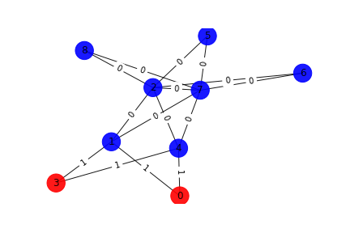
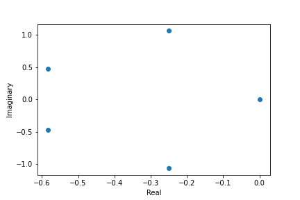
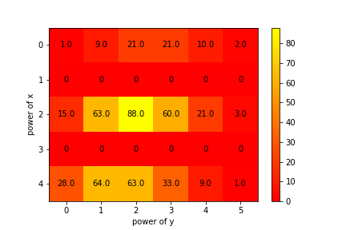

Graph

Number of words associated with this graph: 108
Interlace Polynomial
Polynomial: Poly(6*x**5 + 10*x**4 + 14*x**3 + 10*x**2 + 4*x, x, domain='ZZ')
Roots: [-0.25038439+1.06109164j -0.25038439-1.06109164j -0.58294895+0.47016039j

Interlace Polynomial Two Var
Polynomial: Poly(x**4*y**5 + 9*x**4*y**4 + 33*x**4*y**3 + 63*x**4*y**2 + 64*x**4*y + 28*x**4 + 3*x**2*y**5 + 21*x**2*y**4 + 60*x**2*y**3 + 88*x**2*y**2 + 63*x**2*y + 15*x**2 + 2*y**5 + 10*y**4 + 21*y**3 + 21*y**2 + 9*y + 1, x, y, domain='ZZ')
Coefficients heat map:
